Внимание !
Всегда сохраняйте backup-копии
оригинальных файлов.
Метод сплайсинга наилучшим образом подходит для устранения нежелательных
рефлективных ивентов.
Предположим, в качестве темплейта выбран файл, содержащий два рефлективных
ивента, первый из которых нежелателен.
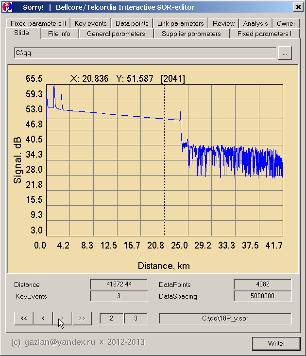
Удаление нежелательного ивента по шагам:
1. Открываем файл в редакторе Sorry!
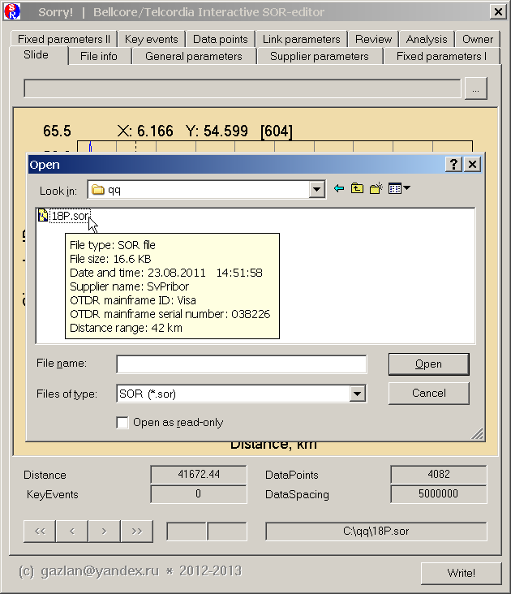
Трасса будет показана на вкладке Slide
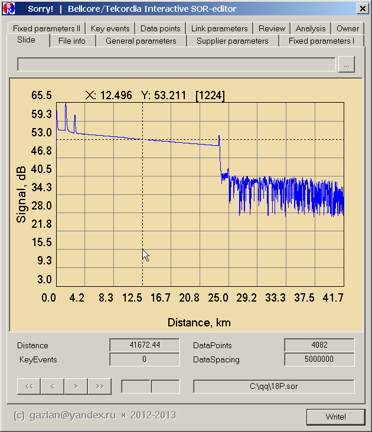
2. Переходим на вкладку KeyEvents
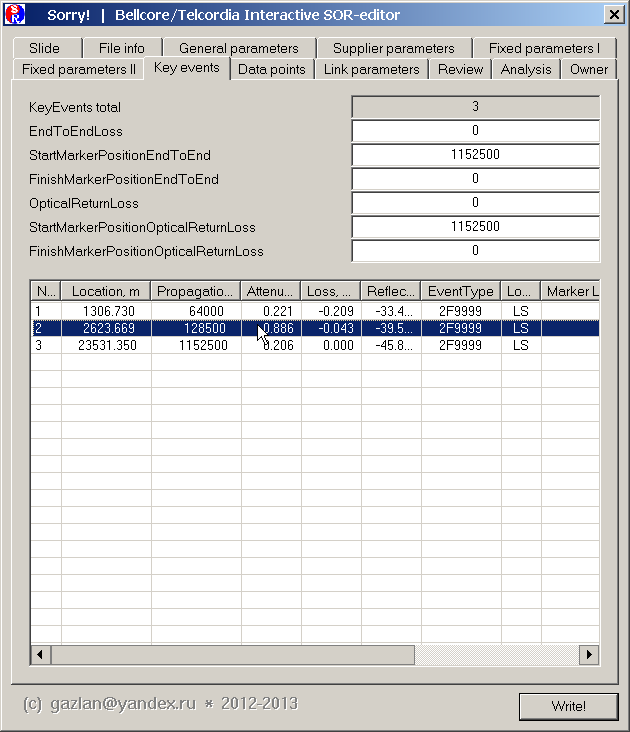
и выбираем первый ивент для физического редактирования
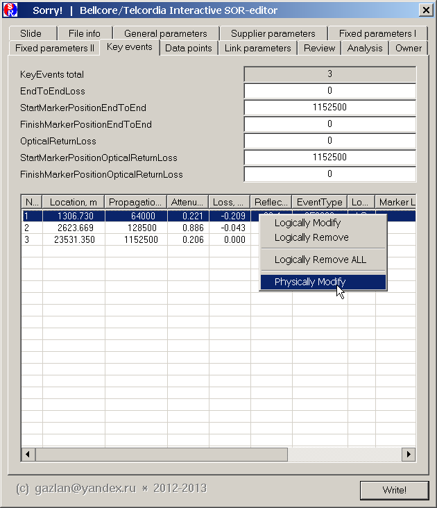
В открывшемся окне 2D-редактора, перемещаем курсор к начальной точке
редактируемого участка трассы и правым кликом мышки отмечаем ее как A (Set as A).
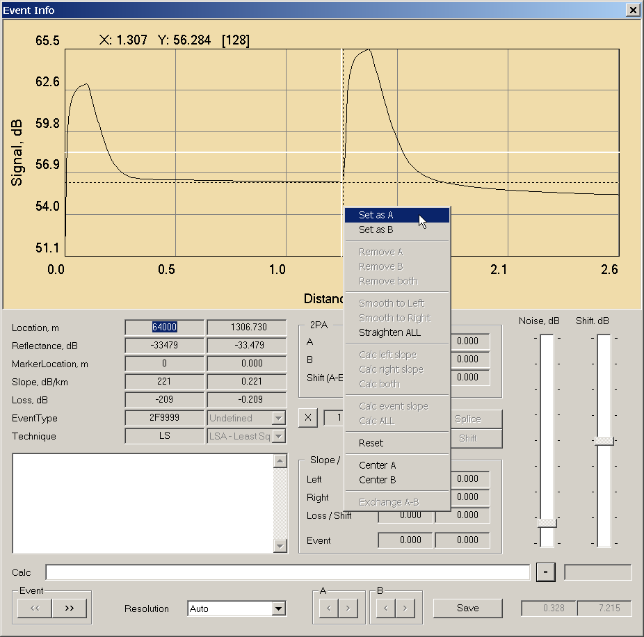
Перемещаем курсор к конечной точке редактируемого участка трассы и правым
кликом мышки отмечаем ее как B (Set as B)
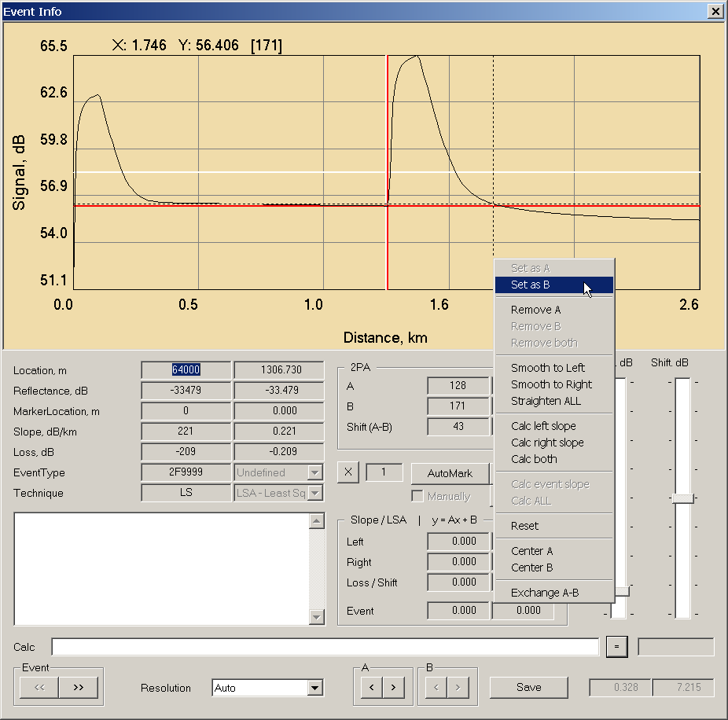
Нажимаем на кнопку Splice
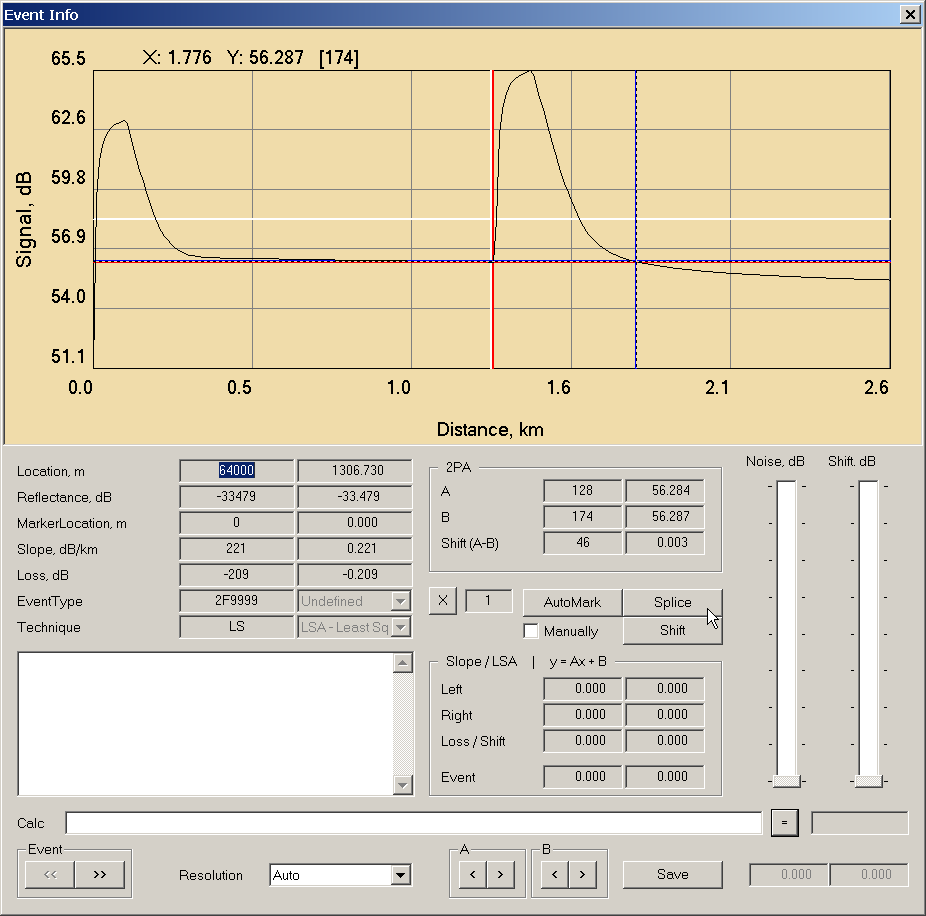
Выбранный участок трассы будет спрямлен сплайсингом. Отредактированная трасса
при этом находится в буферной памяти во внутреннем формате Sorry!, никакая
запись на диск не производится. Все изменения в любой момент можно отменить
нажав на кнопку X (Cancel).
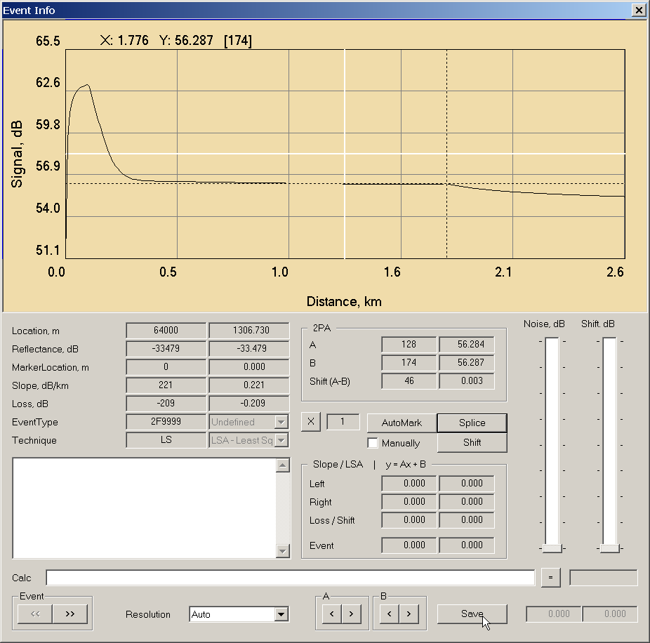
Нажимаем на кнопку Save для сохранения изменений. Измененная трасса будет
сохранена в памяти редактора взамен оригинальной и может быть использована для
дальнейшего редактирования.
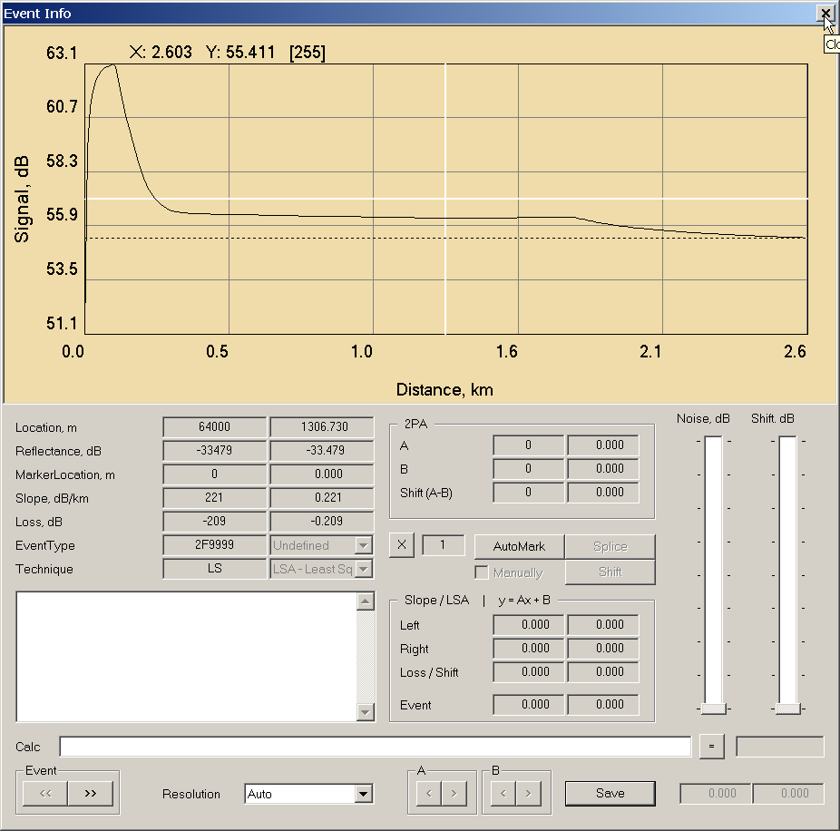
Никакая запись на диск при этом не производится и, при необходимости,
оригинальный файл может быть переоткрыт заново.
Закрываем окно 2D-редактора (маленькая иконка [x] в правом верхем углу). Если
кнопка Save не была ранее нажата, изменения не будут сохранены.
Нажимаем на кнопку Write для сохранения изменений на диске.
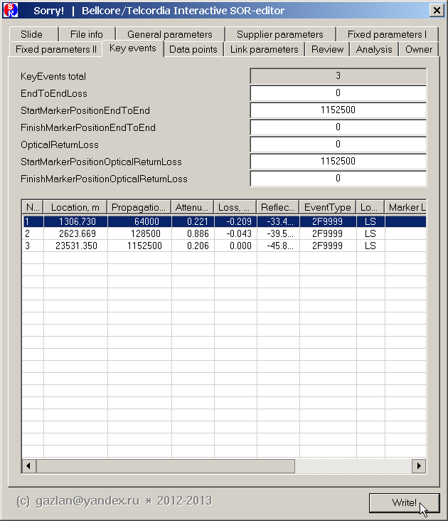
Рекомендуется сохранять отредактированный файл с новым именем, а не
перезаписывать оригинальный файл. Это позволит сделать несколько различных
редакций и легко "откатить" изменения при необходимости
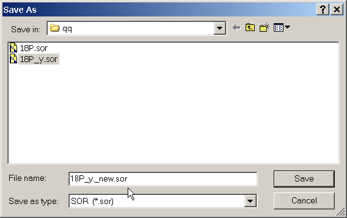
Загружаем отредактированный файл для повторного просмотра.
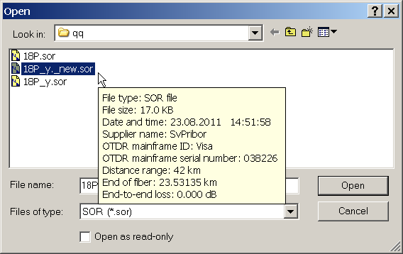
Наслаждаемся результатом.
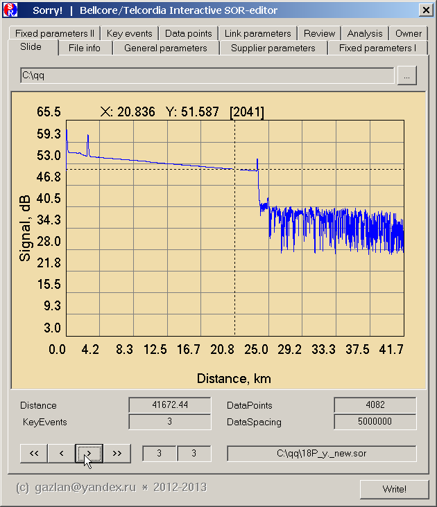
|